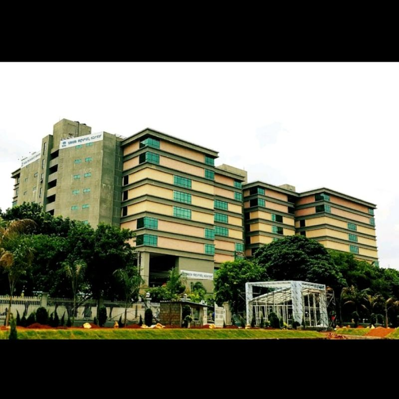

Tata Consultancy

- Tata Consultancy Services (TCS) stands as one of the foremost multinational entities in the realm of IT services and consulting worldwide. Within the vibrant tech landscape of Bangalore, TCS holds a notable presence within Electronic City, particularly in Phase 2.
- This strategic positioning aligns with TCS's vision to capitalize on the robust infrastructure and conducive environment prevalent in this tech-centric zone.
- Operating across various facilities encompassing office spaces, development centers, and research hubs, TCS accommodates a substantial workforce engaged in a spectrum of IT services, software development, consulting endeavors, and innovative research initiatives.
- Serving as a significant employment hub, TCS attracts skilled professionals both domestically and internationally, offering them opportunities to contribute to cutting-edge projects and solutions.
- Bolstered by state-of-the-art infrastructure, inclusive of modern office setups, advanced IT facilities, and recreational amenities, TCS's presence in Electronic City Phase 2 underscores its commitment to fostering a conducive work environment for its employees. Moreover, TCS's robust contributions to the IT sector in Bangalore and India at large are evidenced through its innovative solutions, research endeavors, and employment opportunities, thus shaping the region's technological landscape and contributing significantly to its economic growth and development.
Click image to view TCS in map